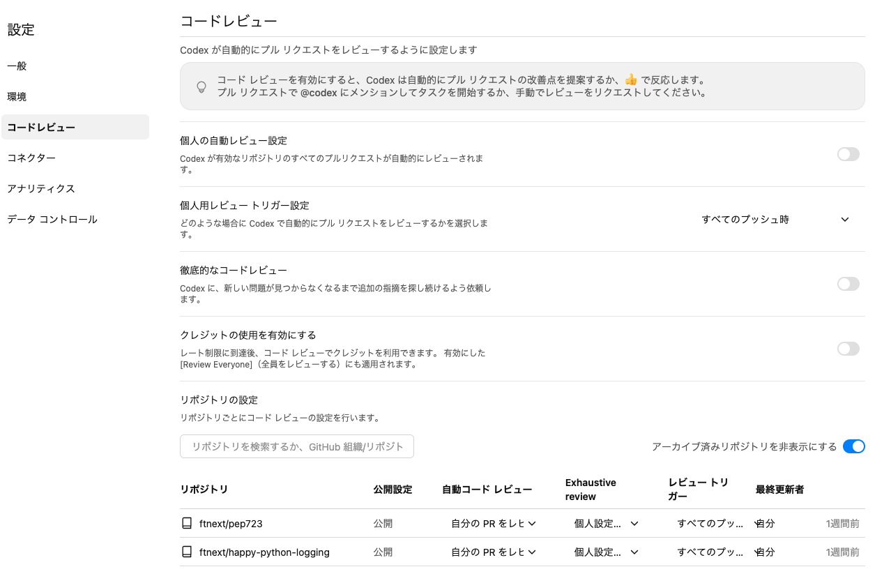
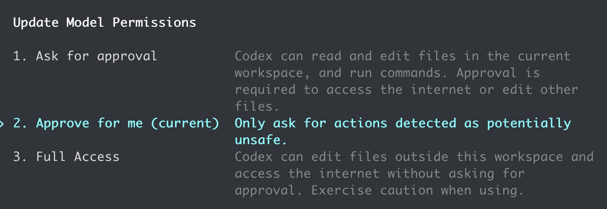

わたしの、最高の相棒、Codex
わたしの、最高の 相棒、Codex
自動レビュー、モバイル、App Server
- Event:
開発フローの中で活かすCodex
#codex_findy- Presented:
2026/06/04 nikkie（スペース連打 or 矢印キーでめくります）
It's time to fly [1]
お前、誰よ [2]
nikkie（にっきー）・Python歴8年・Codex Ambassador (Tokyo)
機械学習エンジニア（We're hiring!）・Speeda AI Agent 開発（A2A提供）
3月 [3] にもお話ししました
おことわり
Codexの利用事例は、私の 個人開発から が中心です
ユーザベースのSpeeda開発チームは 常時ペアプログラミング で開発しています [4] 。featureブランチでプルリクエストはありません
3月からの差分：Codex App [5]

Codexの提供形態 [6] (私の利用量)
App (多) 👈おすすめ
CLI (少)
Cloud (多)
VS Codeなどの拡張 (少)
Appって何ができるの？ ー おすすめ動画 [7]
イチオシ機能：ペット と一緒 [8] 🏃♂️
Pets. Now in Codex.
— OpenAI Developers (@OpenAIDevs) 2026年5月1日
Use /pet to wake your pet. pic.twitter.com/aAm4lLP4LW
本題へ：開発フローの中で活かすCodex (IMO [9])
コードレビュー
実装
コードリーディング
開発ワークフロー
コードレビュー [10]
ひとつのことを極め抜け ⚡️
Codex Cloud
ローカルでの開発
OpenAIはCodexでコードレビュー [11]
Every pull request at OpenAI is now reviewed by Codex before human eyes see it,
Codex code review in GitHub
Codex Cloudは 簡単 にGitHubと連携設定できます
私の設定：PRにpushされるたびにコードレビュー
本当に頼りにしています（例：GitHub Actionsのセキュリティ面）
設定例（画像クリックで設定画面へ）

Codex Cloud のコードレビューのここが推し！
差分を読むだけにあらず
Cloudの環境を使って コマンド実行。仮説を持ったコードレビュー
この動画の受け売り：Automatic code reviews with OpenAI Codex
自動コードレビュー ✖️ PRの面倒
/autofix-pr(Claude Code on the web)（プルリクエストの自動修正） [12]Devin
ローカルのCodex {CLI,App}
/review（/コードレビュー）codex review
現在の差分やブランチをレビューできる
Codex以外でも（Cursor、VS Code）
CursorのComposer 2.5で実装
コードレビュー目的で私は 新規セッションでGPTを呼び出す
plan(Opus 4.8)、実装(Composer 2.5)、コードレビュー(GPT-5.5)と切り替えるのを試し中
ローカル開発で Codex plugin for Claude Code
OpenAIによるClaude Codeプラグイン
Claude CodeからCodexを呼び出せる （スキルやフックを提供）
例：Claude CodeがStopするとCodexがコードレビュー（
/codex:setup --enable-review-gate）
Codexのコードレビューを極め抜け
Codex CloudでGitHubのプルリクレビュー設定はおすすめ
ローカルでの開発でも、Codex(GPT)のコードレビューを求めに行く [13]
🔖開発フローの中で活かすCodex
コードレビュー
実装
コードリーディング
開発ワークフロー
自動レビュー
Codexが 実装 するのを大きくサポート
コマンド実行の 許可を求めてこなくなる
プルリクエストや差分の コードレビューではない です
Codex App「代理で承認」（旧称 自動レビュー）
Auto-review is a new mode that lets Codex work longer with fewer approvals and safer execution.
— OpenAI Developers (@OpenAIDevs) 2026年4月23日
It helps Codex keep moving through tests, builds, and more, including during long tasks and automations, while a separate agent checks higher-risk steps in context before they run. pic.twitter.com/TCcNC5yB0H
Codex CLIは /permissions

codex-cli 0.136.0-alpha.2
自走例
Opus 4.7(high)と superpowers で長大な計画（4000行）を作った
GPT-5.5(高)とsuperpowersで実装（Codex Appの自動レビュー）
実装が終わるまでの 2時間、人間にコマンド実行許可を求めて止まることがなかった
自動レビューは何をするのか
LLMがコマンドの 実行許可を人間の代わりに 見てくれる [14]
サブエージェント + プロンプトによる実装（
guardian_approval）
Codex Appの自動レビューにめちゃめちゃ助けられていて、でもこれって企業秘密っぽいよなーと思ってましたが、なんと仕組み公開されてました。
— nikkie(にっきー) / にっP (@ftnext) 2026年5月25日
プロンプトで判定させてるだけ、パクれる！！https://t.co/ASkqHfswHq
App Serverもサポートしているみたいで、Codex Appに限らず使えそう。ありがたい限り
参考：同様の機能の流れ
Claude Code auto mode
Cursor (3.6) Auto-review Run Mode
コーディングエージェント自走が圧倒的に簡単に
2026年最高の発明、自動レビュー
Codex {App,CLI}（や他のコーディングエージェント）でぜひ設定しましょう
仕組み：LLMにプロンプトで 代理承認 させています
CM：導入するなら
Want to (officially) use Codex at work?
— OpenAI Developers (@OpenAIDevs) 2026年5月13日
Send this post to your CTO to bring your team to Codex. Eligible enterprise customers who switch in the next 30 days get 2 free months of Codex usage for new users. pic.twitter.com/38e8y7MAmg
🔖開発フローの中で活かすCodex
コードレビュー
実装
コードリーディング
開発ワークフロー
コードリーディング
You've been asking for this one...
— OpenAI (@OpenAI) 2026年5月14日
Now in preview: Codex in the ChatGPT mobile app.
Start new work, review outputs, steer execution, and approve next steps, all from the ChatGPT mobile app. Codex will keep running on your laptop, Mac mini, or devbox. pic.twitter.com/9i2Jckjt9z
元々Codexでソースコード読んでました
モバイルでCodex
私はPCでCodex Appで常時作業
スマホさえ持っていれば、PCにcloneしたコードについて質問して PCが手元になくても 回答を得られる
仕事中
- 通勤中:
投げておいた質問の回答を読みながら
- 仕事中:
休憩時間に使ってるライブラリへのニッチな疑問を、モバイルから自宅のCodexに投げる
モバイルで超快適コードリーディング
Codex AppにChatGPTモバイルアプリから接続 する設定をぜひ！
ここでもポイントは「自動レビュー（代理で承認）」
なおMacBookは画面ロックせず低電力モードで待機（最適化の余地あり）
🔖開発フローの中で活かすCodex
コードレビュー
実装
コードリーディング
開発ワークフロー
App Server
Codexを使った 開発ワークフローをカスタマイズ できる
いろんな形態 で提供できる秘密
App
CLI
Cloud
VS Code拡張
記事 Codex ハーネスの解放：App Server を構築した方法
サーバとクライアント間の JSON-RPC プロトコル [17]
異なるクライアント（CLI、App、IDE拡張、...）が同じCodexハーネスを使用できる
CLIで
codex app-serverしたらサーバ起動
App Server SDK [18]
TypeScript
Python (NEW!!) 今週 🔥
App Server SDK
npm @openai/codex-sdk （例：nrslib/takt [19] ）
PyPI openai-codex
実装例：Codexに実装&コードレビューさせる
% uv run review_loop_idea.py
Sample project: /.../codex-sdk-implementation-review-ayzpy2am
Implementation/review CLI. Type /diff to show the current diff.
Type /exit or /quit to stop.
task> calculatorに冪乗を実装して
Implementation:
実装しました。
Review cycle 1:
Review summary: No actionable correctness, regression, missing-test, or unsafe-behavior issues found in the uncommitted changes. `PYTHONDONTWRITEBYTECODE=1 python -m unittest -v` passes.
Review findings: noneぜひ構築してみてください！
OpenAIによる Python SDK Examples
nikkieまとめ Awesome Codex App Server （更新中）
まとめ🌯 わたしの、最高の相棒、Codex
- 自動レビュー:
自走 が簡単に（+定評あるコードレビュー）
- モバイル:
スマホ片手にどこからでも コードリーディング
- App Server:
開発ワークフロー も組める！
ご清聴ありがとうございました！
Happy Development♪
お知らせとAppendixが続きます
nikkieさんからのお知らせ（再現）
会えるAmbassador(?)勉強会情報（かいつまんで紹介します）
- 6/16(火)Claude Code、どこまで任せられる？失敗事例から任せ方を学ぶLT会（オンライン） LTも募集中
- 6/23(火)小規模開発のリアルを語ろう〜試行錯誤を持ち寄る会〜（渋谷）
皆さんのお近くを訪れるかも
- 6/5(金)Python Meetup Fukuoka #7
- 6/28(日)きのこカンファレンス2026（6/28本編）
- 7/18(土)みんなのPython勉強会 in 長野 #5
- 8/21(金)22(土)PyCon JP 2026 (広島)
近い将来Codex関係のイベント開催する時は、ぜひお越しください！
Appendix：開発フローの中でさらに活かすCodex
調査
自動化
助けてCodexえもん〜
落ちた GitHub Actions の調査
ローカルPCから
ghコマンドでworkflowのログを確認
自走して適切に修正
自動化
シェルスクリプトに秀でていると感じる
3月に話しました
直近ではLLMを使おうとしたら綺麗にシェルスクリプトに収められた
Claude Code Actionを使っていたが、「その必要ないです」とCodexがシェルスクリプトにした例
https://github.com/ftnext/agents-cli-source-mirror/commit/6a50f60772c2b11782c113be69715a2e63392863